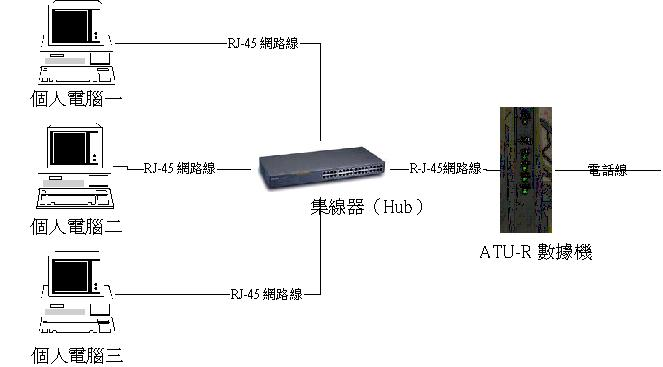
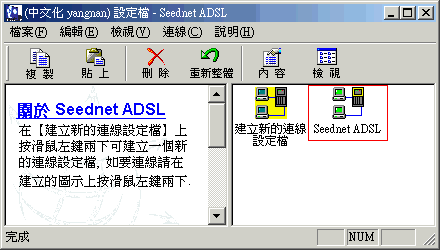

鸟哥的 Linux 与 ADSL 私房菜 


直接以 Hub 分享 ADSL 的带宽
最近更新日期：2002/01/24
目的与适用性
准备工作
申请 ADSL计时制
在 Windows 操作系统下架设网络卡
硬件之间的线路连接
移除或增加通信协议
内部网络：激活网络上的资源分享
外部网络：挂机上 Internet
观察 IP 的情况！
目的：
基本上，就如同前面我们一直强调的，只要有两部以上的计算机即可做成局域网！而由于计时制的 ADSL 系统中，通常可以开放 2～5 个 IP 给同一个帐号使用，因此，我们仅需要：
使用 Hub 完成挂机；
每一部计算机独立安装拨接程序，每一部计算机可以独立上网，不受主机的限制。
如此即可完成带宽分享的目的，当然，带宽分享最大的享受就是可以仅使用一条电话线，即可随意上网与联机玩挂机游戏。当然罗，这个方法有个先天上的限制：『这个方法并不适合仅提供一个 IP 的拨接制 ADSL ，例如 Giga 就不适合本方法！』
适用性：
适合 ADSL 计时制（中华电信仅支持两部、Seednet支持 5 部计算机挂机）；
本方法所适用的情况是每部计算机『都可以独立直接拨接上网』的情况！
所需要的软硬件配备：
微型机（PC）；
网络卡（每部计算机均要一块）；
正常的 RJ-45 网络线，亦即是并行线（连接计算机与Hub及ATU-R）；
集线器（就是 Hub 或者是 Switch 啦）；
ADSL 计时制（连同 ATU-R）。
在中华电信的网页中有图求助明每一种网络挂机应该注意的硬件设备，您可以去看看。
微型机，且已安装任何一版的 Windows 操作系统；
Seednet ADSL 或 Hinet ADSL 或其他 ADSL 皆可（可提供多个 IP 给一个帐号使用）；
任一款 10/100M 的网络卡，每部计算机都要一块；
够长与足够的正常的 RJ-45 网络线（如果你有 N 台计算机，则你至少需要 N+1 条网络线，N 条接 Hub至 PC，一条接 Hub 至 ATU-R ）；
集线器（或者是交换器，即 Hub 或 Switch） ，任一款皆可，不过需配合你的网络配置，如果您想要同时挂机五台以上的计算机，则您的 Hub 应该买有 8 个网络孔的形式，不过 VBird 特别建议买可以分辨 10/100 的 Hub 或 Switch ，如果您的经费足够的话！
示例：我有三台计算机要连成局域网，则我需要的网络配备为（1）三块网络卡；（2）一个五孔的集线器（Hub）；（3）四条网络线；（4）ADSL设备为Modem、电话线，这样就可以罗！
当前Hinet计时制提供同时两部计算机挂机，而Seednet则提供五部计算机挂机，但是Seednet若打开三个以上的计算机挂机帐号时，在挂机之前必须先打电话至 Seednet 请求打开！关于 ADSL 的申请方式在此就不罗唆了，请至各服务站点查询。这里再次重申，这个方法『仅适合提供多个浮动 IP 的拨接式 ADSL ，例如 Seednet 或 Hinet』
申请 ADSL 需要一段时间，而且并不是只要家里有电话就可以申请 ADSL ！这是由于 ADSL 的网络传输信号与机房到你家里的距离有关，基本上，通常电信人员会建议你『家里需要距离中华电信机房 4 公里内』才来安装 ADSL ！此外， ADSL 等待来安装的时间通常是因为：(1) 该地区申请的人太多，排不出时间来替你安装；(2)机房的机器还在准备当中。所以呢，申请 ADSL 到中华电信的人员来你家里安装，大概需要 2 个星期左右，但是又因为一些基本环境的不同（例如你的居家附近突然有很多人申请，那幺肯定就会很慢啦！），所以来装机的时间并不固定喔！如果真的等的不象话，应该打电话到申请的 ISP 去询问看看罗！
在计算机挂机的网络卡选择方面，因为是家庭式的网络配置，基本上传输速率与流量均不会太大，因此随便一块网络卡也就可以了。且由于当前的网络卡几乎清一色都是 10/100M 的网络卡了，所以选择一张不太贵的也不太怪的网络卡（当然最好是PCI接口的啦）就可以了。但是记得，千万不要买只有 10M 的网卡（其实现在要买到 10M 的网卡也蛮难的），至于若是你买到比较怪异的网络卡时，记得，不要使用 Windows 内附的驱动程序，因为一定会有问题，这时一定要使用你的网卡所附的驱动程序，这样会比较容易安装喔！例如 VBird 用过一块日本制的网络卡，型号是FNW-9702-T，这块卡的安装就很麻烦，他一定要有驱动程序，不然一定不让你捉的到.....。
安装方式
拆开每台计算机机壳将 10/100M 网络卡安插至 PCI 槽；激活计算机后，通常 Windows 系统会自动地帮你安装好网络卡的驱动程序，不过，如果你的网络卡并不被 Windows 所支持，则使用网络卡附的驱动程序，请将驱动程序片放置于 A： 或CD-ROM中，其他只要等待重新引导系统就可。
确认硬件安装完整
硬件安装完毕之后，请一定要到系统（开始-->设定-->控制台-->系统）中的『设备管理员』去看看你的网络卡有没有问题！！如下图所示：
如果有问题的话，在下面的图示中，点选网络卡那一项，选择『移除』，之后再按『重新整理』即会捉到网络卡，然后再将驱动程序的安装路径指向正确的地方（通常是 A 槽或是 CD-ROM）。如果你的网络卡太旧，以致于没有网络卡的驱动程序，建议你来老伯的硬件小站看看：
通常第一次安装网络卡后，系统都会给两个网卡的型式，一个是正确的网络卡（如下图框起来的部分），另一个则是给传统的拨号网络用的！如果你不用传统的拨号网络（就是 56Kbps 那一种），这个接口是可以移除的！
请到【控制台\系统\设备管理员】看看网络卡是否安装正确.
我们是以 Hub 直接作为连接各硬件设备的接口，但是因为不同时期使用的 ATU-R 的支持性不同， 所以您必须特别注意每一种 ATU-R 的规格。基本上需要注意：
旧式的 ATU-R ：有一种是直立型的 ATU-R ，而且他的外表示黑色的，那个是早期的小乌龟！那种型式的小乌龟可以用『并行线』与 Hub 的『一般孔』连接就可以了；
新式的 ATU-R ：就象 VBird 当前用的这一款，是 Alctel 公司的 speed touch 340 这一机型，平躺的造型，而且是白色的。这一款的 ATU-R 就必须要使用『跳线』连接到『 Hub 』的『 Up-Link 』孔才行！
总之，您在测试 Hub 的连接是否正常的时候，请务必记得『网络卡的灯与 Hub 上面接上线的灯必须亮着』才行！如果灯没有亮的话，那幺就肯定在挂机的部分就有问题了！请设法解决之。而挂机的设备图有点象底下的图示。
附带说明一下，在选择集线器的时候，一定要注意的是你需要的传输速度，一般来说若无特殊需求，一部 10M 的集线器对于一般家庭来说已经够用了，但是如果是企业内部用的（当然，这不在我们的讨论范围内），可能就需要买可以自动识别 10/100M 的集线器罗！如果你对于传输速度很请求，那除了集线器之外，你的ADSL当然不可能选计时制的，因为传输速度确实比较慢喔！至于每部计算机的挂机方式，可依照个人喜好选择你适合的挂机程序罗！
另外，关于 Hub 的规格亦有所不同，通常五端口的集线器中有一端口(UpLink)是专门用来沟通两台集线器用的，所以正常的情况之下，那一端口是不可以使用的。但是每一种集线器的规格毕竟不同，我就曾经用过一台五端口的集线器，他的 UpLink 端口竟然可以使用跳线来与其他的设备沟通！但是另一款的就不行了！此外，所有接上 Hub 的计算机，都是使用『并行线』来连上 Hub 的呦！

由于局域网是由一些网络的通信协议所驱动形成的（关于各种通信协议请参考 study-area 的说明），所以请一定要在网络的组态内加入下列的通信协议，当然，在您网域内的所有计算机均需要做以下的设定！
TCP/IP
NetBEUI（或 NetBIOS ）
要确认您的设定有没有问题，请到这里一步一步的检查一下您的设定喔！OK！那我们开始安装通信协议吧！ 请特别注意，除非你的网络系统中有 IPX/SPX 之类的服务器，否则就不要安装 IPX/SPX 这一个通信协议，不然你的 Windows98 连 Windows2000 的速度会跟乌龟一样慢喔！
安装局域网的各种通信协议
打开方式：
a. 在【网络上的芳邻】按鼠标左键点选择【内容】；或
b. 至【开始-->设定-->控制台-->网络】打开【网络】组态页面，打开后会如下所示：
当然，上面是已经安装完成的图示（而且已经砍掉了『拨号适配器』那一项罗）。通常 Windows 系统安装完毕之后均会有『拨号适配器』这一项，这是给传统的电话拨接 Modem 用的接口，如果你还有拨号 Modem 在你的计算机上，那这个地方就不能除去。不过，象我的计算机中，因为我不用拨号网络，所以就把这个接口给杀掉了！注意：TCP/IP是最基础也是最重要的通信协议，请一定不要删掉他！
由于我们是使用ADSL拨接的，所以必须要有P.P.P.o.E.Adapter (NTSP3)这个接口， （如下图所示），若您是使用 Windows 98 系列的系统，则安装完拨号程序之后，接口卡也就安装好了，但如果您是使用 Windows Me 系统的话，那就必须增加这一个接口罗。增加的方式为：『开始』-->『设定』-->『控制台』-->『加入新的硬件』。按两次『下一 步』之后，选择『否，我想从清单上选择硬件』，选择『网络适配器』，之后选择正确的接口卡就可以了！
好了，现在安装通信协议：
如上图所示，按【新增】钮后出现下面窗口。
点选【通信协议】-->按【新增】钮。

点选【Microsoft】-->点选【NetBEUI】通信协议-->按【确定】钮。按完『确定』之后会显示成如下图所示。重复上面新增的步骤，以增加其他的通信协议。
然后开始增加使他人可以用你的文件及打印机的选项：
上图的（1）即是刚安装的【NetBEUI】通信协议，先点选【Windows 注册】，通常我都将之改选为『Client for Microsoft Networks』这一项-->按【文件及打印分享】钮，将两分享项目都加以核选！
创建虚拟 IP 于每部计算机中
在你设定好了所有的通信协议之后，再来就是要修改 TCP/IP 中的设定了！通常，你应该给网络卡一个 IP 位置，关于 IP 地址的意义你可以到这里去看看。基本上，由于我们都是使用『虚拟 IP 』来给你的局域网运作，因此，回到刚刚的图，然后点选『TCP/IP』这一个项目，会出现如下的屏面：
我们设置的这个虚拟网络 IP 是 192.168.XXX.XXX 的形式，你可以完全照 VBird上面的设定来输入，亦即输入 192.168.1.2 这一个 IP ，子网络掩码则同样的输入：255.255.255.0，你可以不用知道子网络屏蔽的意义，不过，如果你想要有更深入的认识，还是建议你到这里来学习一下吧！另外，需要注意：
每一部计算机的 IP 前面三组号代码需要完全相同（192.168.1）至于最后面的号代码则一定要『不同』（在 1-254 之间）；
所有计算机的『子网络掩码』必须完全相同（都是 255.255.255.0）！
开始设定你的局域网的工作群组与计算机名称：
点选【标识数据】页面，如下图所示分别输入您想要的工作群组与计算机名称：
这里要注意的是，由于工作群组设定不同的时候，你将会在网络上的芳邻看不到你设定的其他局域网上的计算机，要在『整个网络』中才会看到，所以：
请将每台计算机的工作组名设定为一样！但
个别计算机的名称请设定为不一样！
最后，按【确定】钮回到【组态】页面再按【确定】钮等待 Windows 更新网络组态..再从新激活计算机即可！这样一来就可以开始资源分享的设定罗！
在文件总管中，在想要分享的磁盘驱动器或者是文件夹按鼠标右键点选【内容】，如下图所示：
在下图中核选【资源分享】，请设定资源分享的名称，然后访问类型可依个别喜好来设定，如果你这个数据很重要，不希望被除去掉的话，最好选择只读；但如果是一般家庭的网络系统的话，通常就直接设『完整』了，反正都是自家人，不过，由于最近的 Nimda 病毒等价的恐怖，所以这里还是建议：
使用完资源分享之后，立刻将资源分享关闭吧！不然的话，请三天两头更新一次您的病毒代码吧！免得中毒了！
另外要注意的是，如果你选择了『按照口令决定』时，你就必须要输入两组口令喔！
基本上，以上的设定就已经足够了，再接下来就是每台计算机之间的连接方法了！
在你依序做完了硬件的连接与通信协议的安装并打开了资源分享后，基本上，集线器的电源一开，你网络上的芳邻中即可看到刚刚设定的所有相同工作群组的计算机名称在你的网芳中了！接下来就是安装挂机程序以连上 Internet 啦！
安装挂机程序：
这里以 EnterNet 300 v1.41 为例！
下装EnterNet 300 v1.41，或到 史莱姆的第一个家 去看看
将压缩档解开至你所要的目录中，并运行Setup程序；
运行Setup，若是怕麻烦，直接选择 Quick setup 就可以罗！
重新引导系统；
运行中文化软件（如果有的话），将这套软件中文化吧！
在桌面上会有一个 EnterNet 300 的图示，运行他！
输入
帐号
口令及
你要的挂机代号就可以罗，这样就会在挂机图示上出现一个你的代号的挂机图示；
运行你的挂机图示，以连上 Internet。
以下图示各步骤：
1.点选挂机. |
1.核选【1】与【2】项目. |

按 Seednet ADSL 挂机程序
在【1】与【2】,【3】字段输入 Seednet |
1.设定完成后直接将 Seednet ADSL 挂机程序拖放于桌面供以后手动挂机. |
完成了上面所有的设定之后，从此，每部计算机一引导系统，便可以直接连上 Internet 啦！很简单吧！
注：各家 ADSL 固网公司所给的挂机软件都不太相同，而且不同的操作系统（ windows98, windows me, windows2000 ）所适用的挂机软件亦不尽相同，这里仅是绍介一种挂机软件，你可以选择适合你的操作系统的挂机软件幽！
一般而言，欲检查你这部计算机的 IP 可以使用 Windows 98 的一个小程序，名称为：Winipcfg.exe（在C:\windows\winipcfg.exe），双击这个程序即可知道您计算机的 IP 地址啦！注意喔！由于你有设定虚拟IP，所以每部计算机应该都会有两个 IP ！一个为物理IP一个为虚拟IP！
据说设定虚拟IP的好处在于可以加快局域网的挂机情况，并且也可以加快引导系统时的网络检测速度喔！
另外，你也可以用下面的方法来理解你的 IP 状况！
在挂机的驻留图示上双击鼠标左键
这就是你当前挂机的 IP 地址！此外，以下提供一些有关测速、IP的站点提供给大家罗！（感谢小红帽上面技X讨论版板主schnaufer 提供的相关讯息！真的很棒！）
测速站点
http://www.linkwan.com/big5/broadmeter/speed/speedthermoeter.htm
http://cs.giga.net.tw/TestSpeed/TestSpeed.HTML
http://netcity1.web.hinet.net/UserData/r1034230/
http://speed.anet.net.tw/speedtest/speedtest.htm
http://www.computers4sure.com/speed2.asp
察看您的真实 IP (给拨接ADSL找到真实IP)
http://checkip.dyndns.org/
http://ehome.asdf.com.tw/check_ip/
http://library.cc.va.us/cgi-bin/ipaddr.pl?This-is-text
TCP/IP 分析
http://forums.speedguide.net:8117/
Who Is
http://www.whois.twnic.net.tw/
http://www.apnic.net/search/index.html
http://www.arin.net/whois/index.html
http://www.ripe.net/perl/whois
2002/ 01/24以来统计人数


Designed by VBird during 2001-2004. Aerosol Lab.